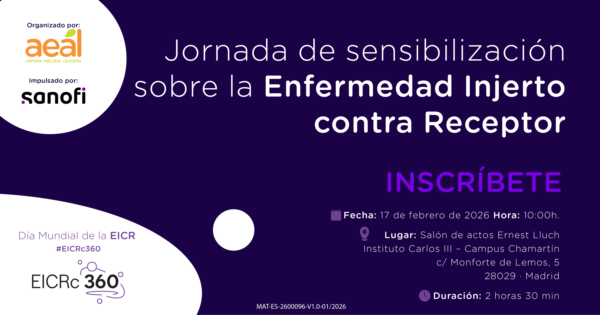
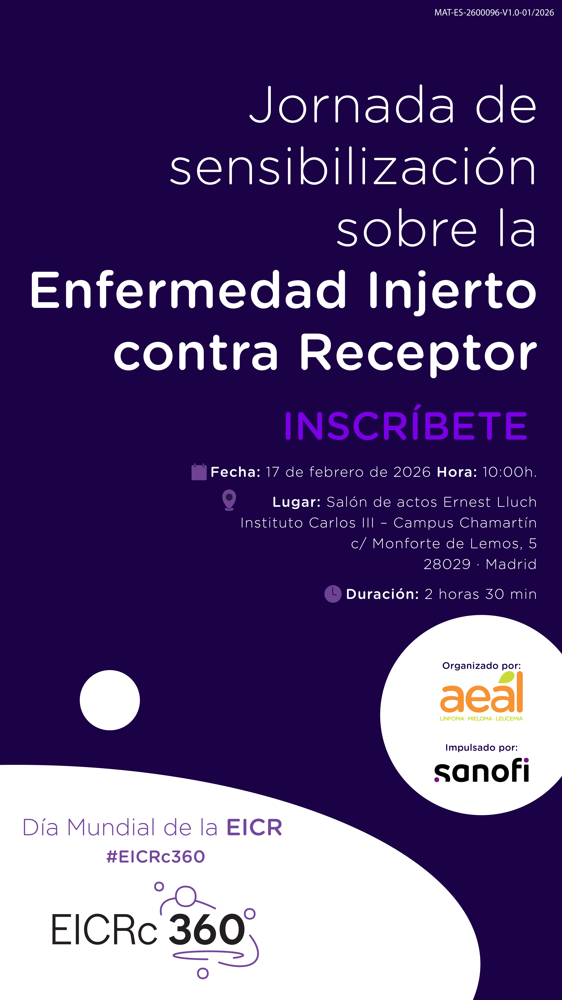

Serie AEAL · EICR Crónica La Enfermedad Injerto contra Receptor crónica (EICR crónica) es una de las complicaciones más complejas asociadas al trasplante de progenitores hematopoyéticos. Aunque el trasplante representa en muchos casos una opción terapéutica...
Serie AEAL · EICR Crónica La Enfermedad Injerto contra Receptor crónica (EICR crónica) es una de las complicaciones más complejas asociadas al trasplante de progenitores hematopoyéticos. Aunque el trasplante representa en muchos casos una opción terapéutica que salva vidas, la aparición de la EICR crónica puede condicionar de forma profunda y prolongada la salud, la autonomía y la calidad de vida de los pacientes trasplantados. En este contexto, resulta cada vez más necesario impulsar iniciativas que aborden la EICR crónica desde una perspectiva integral, incorporando no solo la evidencia clínica, sino también el impacto de la EICR crónica en la vida cotidiana de los pacientes. El proyecto EICRc 360º y la jornada de sensibilización por el Día Mundial de la EICR Día Mundial de la Enfermedad Injerto contra Receptor | AEAL surgen bajo el impulso de Sanofi Sanofi Spain: compañía global de salud y farmacéutica, con el objetivo de generar un espacio de reflexión y diálogo en torno a esta realidad todavía poco visible.
La piel, los ojos, la boca, el aparato digestivo, el hígado o los pulmones, entre otros órganos, pueden verse comprometidos, dando lugar a síntomas muy diversos que van desde alteraciones funcionales moderadas hasta limitaciones severas en la vida diaria de los pacientes con EICR crónica. Esta heterogeneidad contribuye a que la enfermedad sea difícil de explicar, de diagnosticar en toda su dimensión y, en muchos casos, insuficientemente comprendida fuera del ámbito especializado.
Vivir con EICR crónica: impacto físico, emocional y social Los avances en el tratamiento del trasplante han permitido mejorar de forma significativa la supervivencia. Sin embargo, vivir con EICR crónica implica con frecuencia afrontar un proceso largo, marcado por la incertidumbre, la dependencia de tratamientos continuados y la adaptación a cambios físicos y funcionales persistentes.
La calidad de vida en la EICR crónica como eje del abordaje Durante años, la evaluación de los resultados en salud ha estado centrada fundamentalmente en indicadores clínicos. En patologías complejas como la EICR crónica, este enfoque resulta claramente insuficiente si no se incorpora de forma sistemática la experiencia del paciente con EICR crónica.
Un enfoque integral para el abordaje de la EICR crónica La complejidad de la EICR crónica exige un abordaje integral y coordinado, que combine atención médica especializada, seguimiento a largo plazo, apoyo psicosocial y una adecuada articulación entre los distintos niveles del sistema sanitario. Asimismo, resulta imprescindible promover espacios de diálogo en los que puedan converger profesionales sanitarios, instituciones y pacientes. El impulso de Sanofi a la Jornada de sensibilización sobre la enfermedad injerto contra receptor Sanofi Spain: compañía global de salud y farmacéutica , Día Mundial de la Enfermedad Injerto contra Receptor | AEAL responde a esta necesidad de generar un marco de reflexión amplio y estructurado, orientado a mejorar la comprensión de la EICR crónica y a identificar áreas de mejora en su abordaje.
La importancia de la voz del paciente con EICR crónica AEAL Día Mundial de la Enfermedad Injerto contra Receptor | AEAL participa en esta iniciativa impulsada por Sanofi aportando la voz de los pacientes con EICR crónica, una perspectiva esencial para comprender el impacto real de la enfermedad más allá de los indicadores clínicos.
